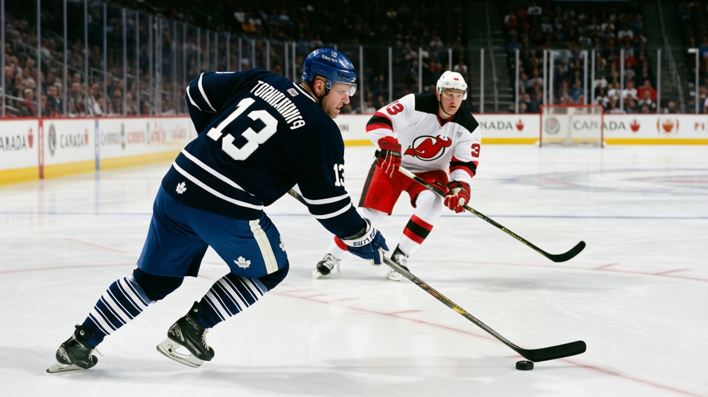

TOR
TORDANFORTH: I was wrong about four things this month and the schedule is about to test whether being right ever mattered
The Panic Meter stays Green. The next five games decide whether that colour means anything.
 Frankie DanforthColumnist · Queen City Telegram
Frankie DanforthColumnist · Queen City Telegram
Code Green

I have been wrong about four things since the Christmas break and I will name them.
I was wrong about  Alexander Mogilny86. I have been writing since 2004-12-20 that a 35-year-old on $5.50M with a five-game absence is a lineup tax, and the man has 51 points in 35 games. Thirty-six assists. At 16.7 minutes a night. I called him a fourth-line candidate in September. He has more assists than anyone on this roster except
Alexander Mogilny86. I have been writing since 2004-12-20 that a 35-year-old on $5.50M with a five-game absence is a lineup tax, and the man has 51 points in 35 games. Thirty-six assists. At 16.7 minutes a night. I called him a fourth-line candidate in September. He has more assists than anyone on this roster except  Marian Gaborik96 and
Marian Gaborik96 and  Bryan McCabe82, and one of those is a 22-year-old who sits 96 on the Bureau's Book.
Bryan McCabe82, and one of those is a 22-year-old who sits 96 on the Bureau's Book.
I was wrong about  Brad Richards85. I logged the second-centre problem on 2004-12-12 and I have wanted a Sundin partner for twelve years. Richards is 24 years old, carries 43 points in 39 games, and the Bureau's Development Index has him at +4 over a base of 82. He costs $1.00M. He is in a contract year. Everything I said about him needing to prove he belongs was correct, and he proved it in 18.0 minutes a night.
Brad Richards85. I logged the second-centre problem on 2004-12-12 and I have wanted a Sundin partner for twelve years. Richards is 24 years old, carries 43 points in 39 games, and the Bureau's Development Index has him at +4 over a base of 82. He costs $1.00M. He is in a contract year. Everything I said about him needing to prove he belongs was correct, and he proved it in 18.0 minutes a night.
I was wrong about the winger I trusted.  Rick Nash81 has 30 points in 34 games at $1.20M and +5 on the Index. He skates 13.0 minutes a night and is 20 years old. He is not my winger. He is better than my winger.
Rick Nash81 has 30 points in 34 games at $1.20M and +5 on the Index. He skates 13.0 minutes a night and is 20 years old. He is not my winger. He is better than my winger.
I was wrong about the fourth line. Petr Chlup82, 18 years old, 21 points in 28 games, $2.34M with two years left on his deal, returned and scored in overtime. I called the fourth line a tax for two seasons. The fourth line is a prospect who scores winners.
The Panic Meter is Green. I despise writing that. I would prefer to be right about something, anything, because being wrong four times in two weeks on the same team is not the kind of winter I had planned. But the meter reflects what the team is doing, not what I expected, and what the team is doing is 29-6-1.
Here is what actually matters, and it is not tonight's game against New Jersey or the 4-1 win in Newark or the 24-point lead over  Buffalo Sabres that makes the division meaningless until April. It is what happens in the next five games.
Buffalo Sabres that makes the division meaningless until April. It is what happens in the next five games.
Friday:  Boston Bruins at home.
Boston Bruins at home.  Glen Murray79 is their best player and he is out with an arm until January 12, which means you are beating a Boston team that has lost four straight and has a 6-13 home record. A good result against them means almost nothing.
Glen Murray79 is their best player and he is out with an arm until January 12, which means you are beating a Boston team that has lost four straight and has a 6-13 home record. A good result against them means almost nothing.
Monday: at  Pittsburgh Penguins. They are 10-19-5. They are missing
Pittsburgh Penguins. They are 10-19-5. They are missing  Martin Straka85 (wrist, January 27) and four other bodies. Another meaningless result.
Martin Straka85 (wrist, January 27) and four other bodies. Another meaningless result.
Wednesday, January 11: at Boston Bruins again. Four days after the first game. Murray is still out.
Friday, January 13: at  New York Rangers. 19-13-4, 52 points, on a two-game slide. They are missing
New York Rangers. 19-13-4, 52 points, on a two-game slide. They are missing  Pavel Bure81 (ankle, January 6). Their best remaining scorer is a man I will not name because I want to see if this team wins without the opponent's star in the lineup.
Pavel Bure81 (ankle, January 6). Their best remaining scorer is a man I will not name because I want to see if this team wins without the opponent's star in the lineup.
Four of the next five are against teams currently below .500. The one that is not is Boston, who is 14-17-3 and has their best player out for the second of two meetings. This is a schedule that lets you build a record without proving anything against a full opponent.
What proves something is when Boston Bruins gets Murray back and comes in healthy. What proves something is when you are in April with Mogilny's legs talking to him at even strength and  Ed Belfour92 at 39 on a back-to-back and Sundin's 5-year, $8.40M contract sitting in the middle of your salary structure like a boulder.
Ed Belfour92 at 39 on a back-to-back and Sundin's 5-year, $8.40M contract sitting in the middle of your salary structure like a boulder.
I want to be right about June. I have been wrong about December, January, and the roster that is currently 65 points through 39 games. The meter is Green because the team is good, and I resent that I cannot argue with it.